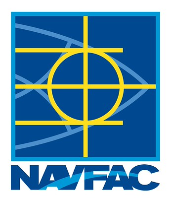
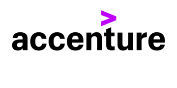

Juan Rodriguez
Computer Science | CSUN
I am a Computer Science major doing my studies at CSUN and love to create software and find
solutions to real-world
issues.
I have been able to provide work in various settings, including federal
research
and
quality
assurance, which
has also allowed me to have a balanced approach to development and collaboration. I am
constantly
seeking to learn,
contribute, and develop with the people I work with.
Work Experience
Spearheaded the transition of an old site to a newer framework, which entailed designing stages and outputs that needed to be finished in time. Engagement data was also analyzed to determine the areas that need to be improved, which assisted to boost customer appointments and traffic to the site. During the process, I would closely collaborate with the client to ensure they were focusing on updates and that the site was bringing them their needs.
Tools & Technologies:
- Programming & Development: React JS, Tailwind CSS, Next.js
- Systems & Deployment: Vercel
- Data & Analytics: Google Analytics, SEO
Naval Facilities Engineering Systems Command
Computer Science Research Assistant
October 2024 - Present

I worked in a team, where we ensured that software was available and functioning properly in various environments, including offline. I had the opportunity to team up with individuals with other technical backgrounds in order to ensure that all was running safely and in the way it was planned to. I also assisted in leading a group through a presentation and ensured that the documentation was structured in a way that everything was easy to access and manage.
Tools & Technologies:
- Programming & Development: Python, React, Flask, Node.js
- Systems & Deployment: Docker, Linux (Ubuntu), Virtual Machines, CI/CD
- Testing & Data:Regression Testing
- Collaboration & Project Management: Agile/Scrum, Microsoft Office
Accenture, LLC
Business Analyst Intern - Quality Assurance
June 2023 - August 2023

During my internship at Accenture, I got to work alongside different teams to run database tests and make sure website deployments were going smoothly. I also assisted in coordinating schedules and reporting to both Cisco and Accenture stakeholders to ensure that projects remained on schedule and reached a significant number of users. Finally, I had the opportunity to present a VR-based educational tool as part of a sustainability project, and it was an excellent opportunity to think in a new direction and consider how technology can be utilized to meet the needs of its users.
Tools & Technologies:
- Testing & Data: SQL, Regression Testing
- Collaboration & Project Management: Agile/Scrum, Microsoft Office
Education
California State University, Northridge — January 2024 - May 2026
- Bachelor of Science, Computer Science
Current student pursuing a B.S. degree in Computer Science and with practical experience in software development, system programming and cybersecurity.
Rio Hondo Community College — August 2021 - May 2023
- Associate of Science, Computer Information Systems
- Associate of Science, Mathematics
Developed a solid background in computer information systems and mathematics, which became the entry point to Computer Science program at CSUN.